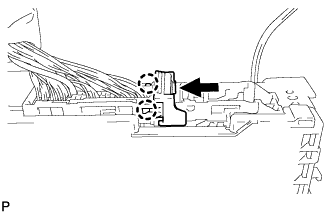
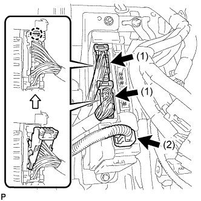

ЭБУ СИСТЕМЫ ПОМОЩИ ПРИ ПАРКОВКЕ (для моделей с правосторонним рулевым управлением) > УСТАНОВКА |
| 1. УСТАНОВИТЕ ЭБУ СИСТЕМЫ ПОМОЩИ ПРИ ПАРКОВКЕ |
Установите ЭБУ системы помощи при парковке и закрепите его 2 болтами.
Подсоедините 3 разъема.
| 2. УСТАНОВИТЕ РАСПРЕДЕЛИТЕЛЬНЫЙ БЛОК СО СТОРОНЫ ВОДИТЕЛЯ В СБОРЕ |
 |
Установите разъем и закрепите его захватом, как показано на рисунке.
|  |
Введите в зацепление 2 захвата, чтобы зафиксировать защелку разъема, как показано на рисунке.
 |
Введите в зацепление захват, чтобы подсоединить разъем, как показано на рисунке.
Установите распределительный блок со стороны водителя в сборе и закрепите его болтом и 2 гайками.
|  |
Подсоедините разъем (1).
Введите в зацепление 2 захвата, чтобы подсоединить 2 разъема (2), как показано на рисунке.
Подсоедините 3 разъема.
| 3. УСТАНОВИТЕ ПОДУШКУ БЕЗОПАСНОСТИ № 1 ДЛЯ ЗАЩИТЫ НОГ В СБОРЕ |
Установите подушку безопасности № 1 для защиты ног и закрепите ее 4 болтами.
Подсоедините разъем.
| 4. УСТАНОВИТЕ НИЖНЮЮ ОТДЕЛОЧНУЮ НАКЛАДКУ ПАНЕЛИ ПРИБОРОВ |
Подсоедините все разъемы и все кабели.
Установите нижнюю отделочную накладку панели приборов и закрепите ее 14 фиксаторами.
Вверните 2 болта.
Введите в зацепление 2 захвата, чтобы закрыть крышку.
| 5. УСТАНОВИТЕ НИЖНЮЮ КРЫШКУ ПАНЕЛИ ПРИБОРОВ № 2 В СБОРЕ |
Введите в зацепление 3 фиксатора и 2 направляющих, чтобы установить нижнюю крышку панели приборов № 2.
Вверните винт.

| *A | Для моделей с левосторонним рулевым управлением | *B | Для моделей с правосторонним рулевым управлением |
| 6. УСТАНОВИТЕ ОБЛИЦОВКУ ОТДЕЛОЧНОЙ НАКЛАДКИ ПАНЕЛИ ПРИБОРОВ |
Подсоедините все разъемы.
Установите облицовку отделочной накладки панели приборов и закрепите ее 4 фиксаторами.
| 7. УСТАНОВИТЕ НИЖНЮЮ ОТДЕЛОЧНУЮ НАКЛАДКУ ПАНЕЛИ ПРИБОРОВ |
Подсоедините все разъемы.
Установите отделочную накладку панели приборов и закрепите ее 4 фиксаторами.
| 8. УСТАНОВИТЕ ПРАВУЮ БОКОВУЮ ПАНЕЛЬ ПРИБОРОВ |
Введите в зацепление 5 фиксаторов, захват и 3 направляющие, чтобы установить боковую панель приборов.
| 9. УСТАНОВИТЕ БОКОВУЮ ОБЛИЦОВОЧНУЮ НАКЛАДКУ С ПРАВОЙ СТОРОНЫ КОЖУХА |
Введите в зацепление фиксатор и захват, чтобы установить боковую облицовочную накладку кожуха.
Установите фиксатор.
| 10. УСТАНОВИТЕ ОПОРНУЮ НАКЛАДКУ ПРАВОЙ ДВЕРИ В СБОРЕ |
Введите в зацепление 4 фиксатора, 10 захватов и 2 направляющих, чтобы установить опорную накладку двери.
| 11. ПОДСОЕДИНИТЕ ПРОВОД К ОТРИЦАТЕЛЬНОМУ ВЫВОДУ АККУМУЛЯТОРНОЙ БАТАРЕИ |
| 12. ПРОВЕРЬТЕ КОНТРОЛЬНУЮ ЛАМПУ АВАРИЙНОГО СОСТОЯНИЯ SRS |
Проверьте контрольную лампу аварийного состояния SRS (Нажмите здесь).